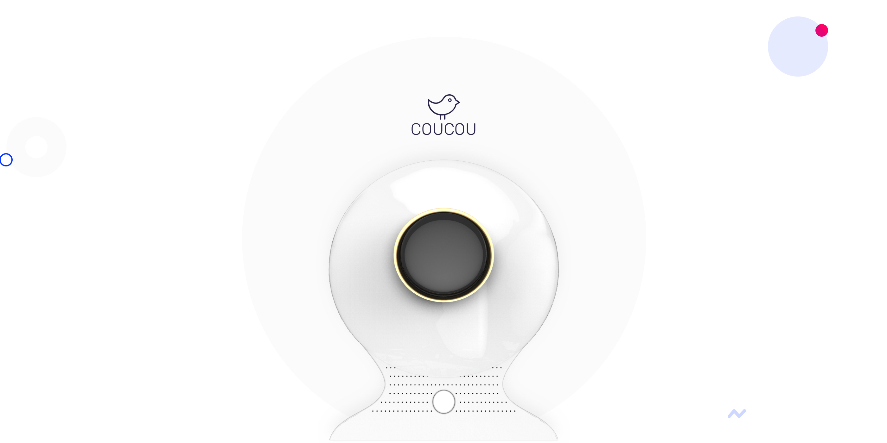
Cou Cou is a smart light that helps people to optimize morning and pre-bed routines by multisensory experience and to perform better during the daytime.
TIMLINE
January - March 2019
RESEARCH TEAM
Faye Gong, Beatriz Alessio
Bradley Sedor, Liying Peng
TOOLS
Paper and Pen, Adobe XD
Rhinoceros, Keyshots
Overview
Project Statement
Lux is a startup company that helps to build on the belief that waking up should be more than an unavoidable, unpleasant routine.
How to design a personalized experience to assist in waking up and do it without compromising on aesthetics, form, or user-friendliness?
Key Insights
1. People acknowledge waking-up sets a tone of their day but think they can't totally treat their waking up as a independent stage in their life. They think the potential optimization should start from sleeping and even after arriving at home.
2. People like multi-sensory experiences and believe sound helps them fall asleep at night, light and reading help their mind wake up in the morning.
3. People would like to follow a process from pre-bed prep to wake-up. Even if they are interrupted or distracted, they want to return to this procedure easily.
Outcome
A smart bedside light for sleep and wake-up aid by sunlight simulation, sound, and touch, gesture and voice interactions.

My Role
The research part was teamwork. The design part is an individual project I developed based on research insights.
1. Participated in user research as a facilitator during interviews and contextual observations
2. Extended using scenarios and identified design opportunities during going to sleep till morning preparation
3. Worked as Design Lead and defined design directions, scenarios and use cases for user experience design
4. Designed a smart solution that combined multi-sensory stimulus to optimize people's sleeping and waking up experience
EMPATHIZE
Lux believes
Our mornings should set the tone for the remainder of our day with energy and ease. And Lux is for people who no longer want to compromise on personal wellness for high performance.
User Research
People have failed on optimizing their daytime work-related performance.
We redefined a problem and recruited millennials and gen-z to find their current unmet needs by doing: interviews, personal video diaries, and contextual observations of bed and morning preparation


Expectations
To sum up, the pain points are:
1. Interrupted Process
The constant checking of the alarms time and volume wastes time and causes users affected by the brightness of the phone and to experience brief moments of unsure.
Goal 1
Users feel confident that they can wake up in the morning at the proper time to start a productive day.
2. Stress Brought by a Look Back of Daytime
Using phones and having self-reflection of daytime performance affect a timely and tranquil process of falling asleep.
Goal 2
Users should take lying on the bed as a clear division to wind down and stop using their phones.
3. An “Unstoppable” Social Media Browsing
The unplanned and prolonged phone time after waking up makes users disappointing since it wastes time from morning preparations.
Goal 3
Without snoozing alarms and scrolling down social media, a natural and calmly waking up makes users feel a good start of a day.
Current Solutions and Workarounds
Initially, Lux believes that existing wake-aids are stress-inducing, unpleasant, and antiquated - they literally alarm your body awake.
In our user research, there are some other methods interviewees mentioned that could help them to relax, fall asleep and feel more motivated. We researched, tried and reviewed different methods for falling asleep and waking up, like Philips Hue Sunlight simulation light, Pillow sleep cycles alarm, sleep aid scent, and meditation sounds.
1. Meditations

Nature sounds and white noise can serve for the hearing part of our multi-sense solution.
2. Alarm, timer APPs

Waking our users up earlier during the surface sleeping with some multi-sense stimuluses would be better than waking them up only by annoying alarm clocks and fits the goal of having a more joyful morning.
3. Aid devices
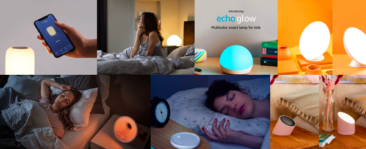Sun light simuliation method has some form factor requirements of the product design and not very portable.
User Groups
Lux's initial target user group and target market were Millennials who needs to wake up at a certain time and be highly functional—and wants to feel good while doing so.
We synthesized from research and defined 3 different groups,

We put design focus on "Type A" and "Type A-".
It's because Type B people have no pressing needs for improving their performance or habits.
Refined High Level Problem
Optimization of the morning and pre-bed routines are not bringing recognizable positive feedback to people.
DEFINE
Persona
"Type A" and some "Type A-" acknowledge sleep could help to improve performance and productivity. They are spending money on productivity and wellness products, having a clear division of time use, cutting phone usage at bed time, doing their ingrained routines and look for perfect.

User Journey

Design Goal
Help users to set and be stick to the ideal time for starting each task
Problem 1
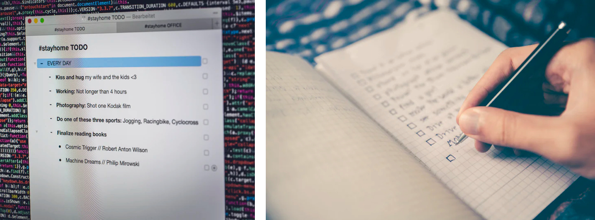Problem 2

Problem 3

Problem 4

Design Opportunity
A collection of well-divided tasks that supports people to be stick to routines and get back easily when the process is interrupted
IDEATE and PROTOTYPE
Low-fi Mockups Testing


1. "I don't want to plan and adjust them all together every time I use it, maybe just give me what should I do next?"
2. "The hockey puck shape is adorable and portable so that I could bring it to the bathroom during I'm doing make-up. But I doubt if the surface is big enough to generate the light to wake me up".
3. "If it could be a substitute for my meditation subscription app that would be great. Like, playing some rain dropping sound while dimming down".
4. "I may just want to go to and fall asleep ASAP without distraction. Simpler, less is more".
Refined Goal
Help users actively identify the correct actions and time that are actionable and able to give positive feedback, so they can optimize their behaviors.
Design Opportunity
A sleep and wake-up light with a touchable interface that gives users clear signifiers of the time, themes, and actions that they could refer to and be stick to.
Mid-fi Mockups
Based on testing result, we design a user flow with features like Timeless timer and Nudge. We also defined the theme color and design patternss for our final solution.


2ND ROUND IDEATION
The 2nd round design ideation started from defining the physical form...

Form Design Explorations and Feedback
Concept 1
· Square surface
· Phone stand
· Phone charger
Likes: Help me to detach and charge phone
Dislikes: Space for generating light,
Concept 2
· Modern unique light shape
· Smaller interface
· Higher
Likes: Slick form, elegant
Dislikes: Specious, not credible (light aid wake-up), not steady, interface is too small(font-size)
Concept 3
· Round interface
· Friendly and slick form
Likes: Modern, credible, clean, steady
Dislikes: no experience on round interface
I decided to move the 3rd concept(without the portable interface part) forward.
Since it makes people feel confident about waking up by artificial light and feel has
Digital Concepts Validation and Analogy
1. Information and Priorty
Evidences
"I use a facial mask while I'm doing meditation to shrink my bed prep time."
"I think the length of time matters. It also reflects my mindfulness. "
"It's also like doing makeup. I like to put on highlight powder after finishing my contour. If I forgot my contour, I wouldn't remember doing highlight on my face."
Implication
Comparing to the To-do List concept, people think the order helps to remenber the what the next taks should be and easier to go through the whole process. So the concept is more like the Gantt Chart.
2. Usage of Light
Evidences
"In the morning I browse my phone to force myself to wake up quicker."
"I tried the way shown in Marvelous Mrs. Maisel. She left a crevice on her shutter to let her wake-up by the sunshine before the alarm clock would go."
Implication
Falling asleep with warm light as well as during waking up would help people to get rid of the reliance of cold light.
3. Providing Feedback
Evidences
"It's like I start from 11:00 and like to use 30 mins to prepare. After I finish I would look at the time showing on my phone screen to know how long I put into the preparation today and compare to the former records."
"I like to calculate how many hours I still have for sleeping in my mind."
Implication
People want to confirm by positive feedback when they feel they are doing well. Using hourglass is a more desirable way than a stopwatch metaphor to show if people are completing their routines on time.
Low-fi Concept Explorations
Mid-fi Validation
Tires
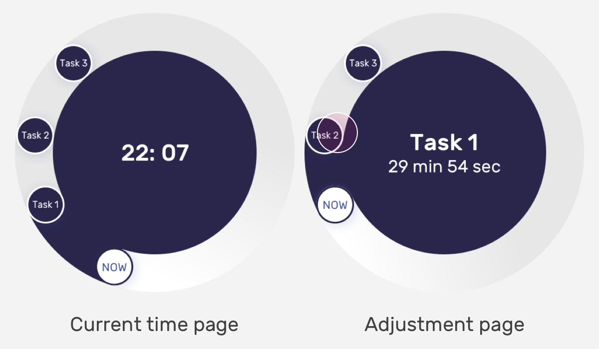Likes:
Fancy, a more customizable timer function
Dislikes:
Confusing interface, stressful seeing upcoming tasks
User flow and Motion
Liquid
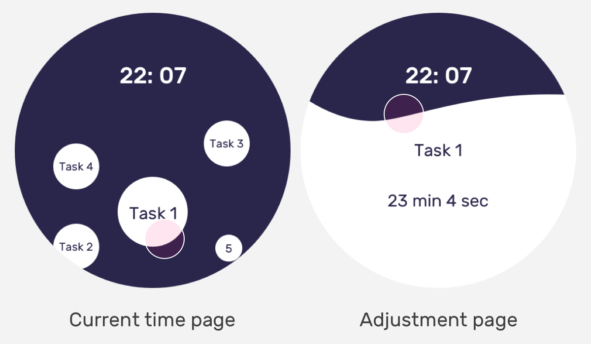Likes:
Interesting, lively
Dislikes:
Distraction, lower discoverability of adjustment function
Clean
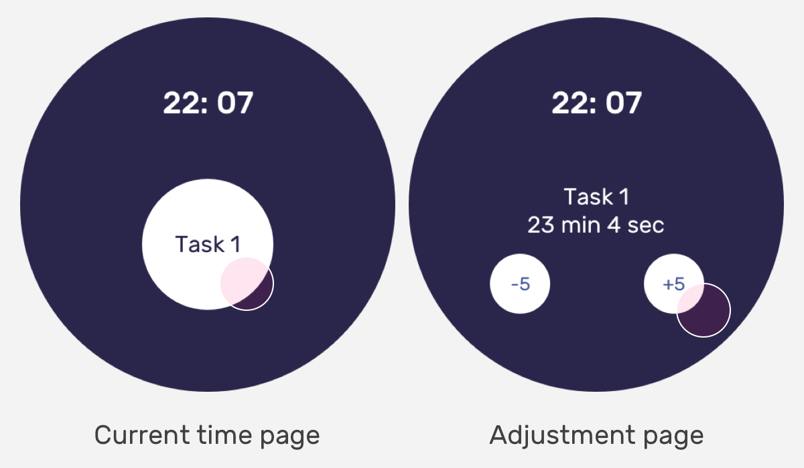Likes:
Clear divided, more focused on the current ongoing task
Dislikes:
Prototyping and Validation
Foamboard and 3D Printing

Gesture control validation
Modeling
The are several form factors considerations:
1. Have enough surface area to ensure light and luminescence generation to wake up users and make this method looks credible.
2. Fit in modern urban bedroom interior environment.
After evaluation with mentors, I chose Design 2 as my final design concept.
DESIGN
Solution
Cou Cou is for individuals who value beautiful technology that seamlessly integrates, simplifies, and optimizes their lifestyle and aesthetic.
Cou Cou supports

Physical Design Detalis
Design Requirements
1. Has a large enough area to generate luminescence to wake up users and looks like convincing
2. Fits in a circle touch screen
3. Has a speaker face to users to give them an immersive sound
Interactions
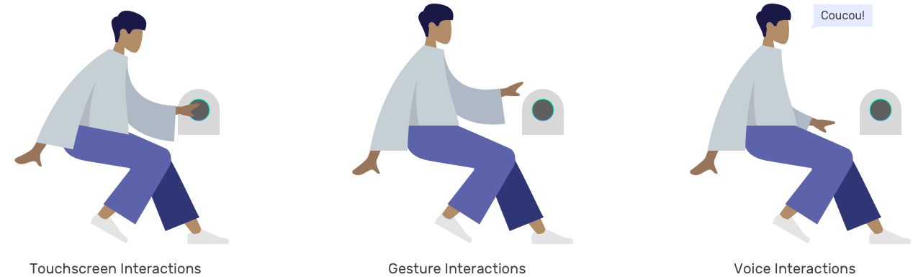User Cases

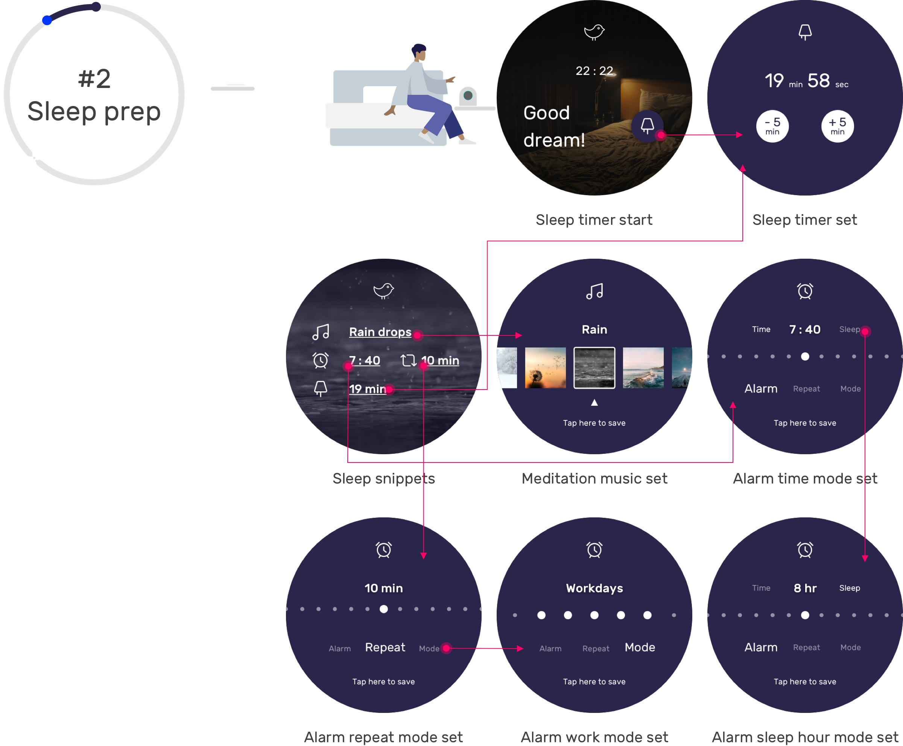
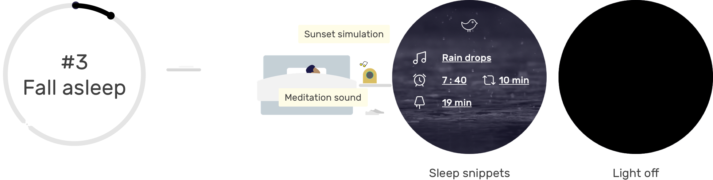


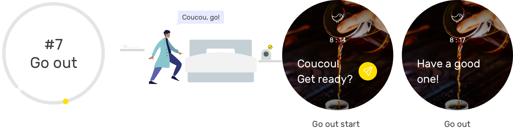
Final Design
Cou Cou is not light therapy, nor an alarm clock.
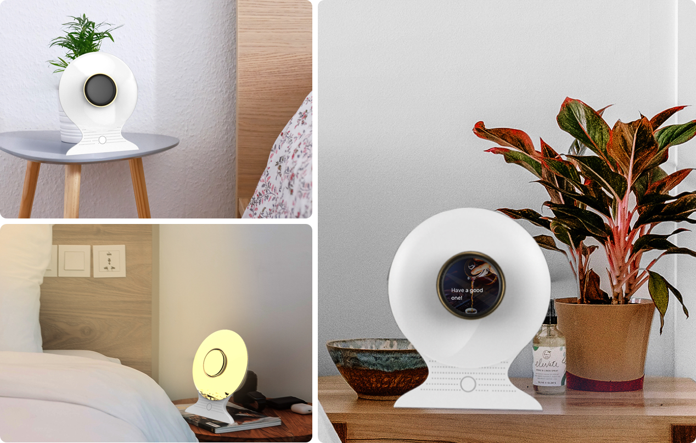Challenges and Pivot
We thought about providing a highly personalized solution for people to manage the time for their daily home routines. But after organizing and synthesizing user insights, I thought the personalization is not the first prioritized goal for Type As. So I did the second round ideation and developed some visual cues to help them go through smoothly and be stick to their routines. So it's more like a general experience to fit with every Type A person's home routine journey.